El Castillo Marroquín es una estructura antigua hecho en el año 1898, hoy en dia se usa como un centro de convenciones, conciertos y eventos en gran variedad, junto
con alta experiencia ofrece a la comunidad sus servicios.
SENSOR-FESTIVAL
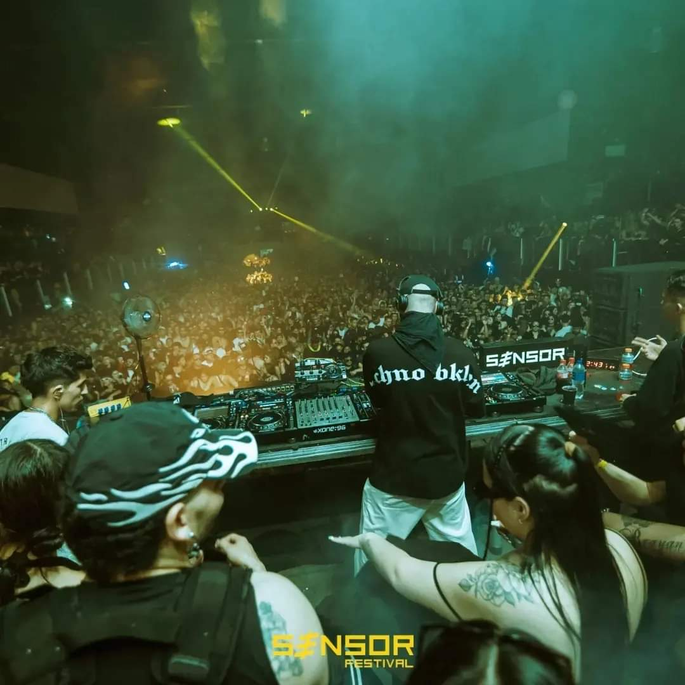
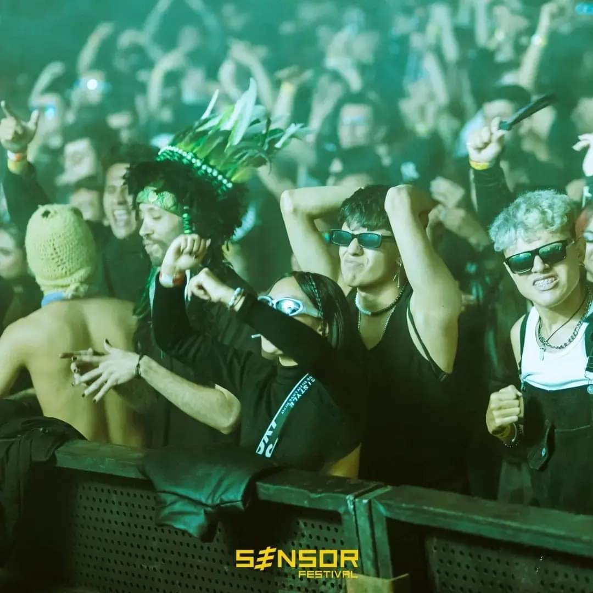
La evolución de nuestra rave llega imparable para una gran noche que marcara nuestra
historia y donde viviremos todxs juntxs hermosas experiencias guiadas por la magia
y alegría de la música Techno.
Para los amantes de los festivales musicales excéntricos
y con muchas actividades, un festival con dos opciones musicales, reguetón y
electrónica. Se realizará en el Castillo Marroquín y ofrecerá 15
horas de música por lo que abrirá sus puertas al medio día.
Para materializar su locura, el señor Marroquín contó con la colaboración del arquitecto francés Gastón Lelarge, constructor del Capitolio Nacional de Colombia y como maestros
de obra, actuaron Julián Lombana y Demetrio Chávez.
El señor Marroquín trajo la idea de construir el castillo luego de sus viajes por la orilla del Rhin, para de 1899 a 1902, edificar en piedra el castillo medieval, que conocemos en inmediaciones del municipio de Chía construido con el estilo château influenciados por la arquitectura gótica tardía y la arquitectura renacentista italiana que con frecuencia cuenta con edificios incongruentemente adornados por elaboradas torres, agujas y cubiertas muy empinadas.
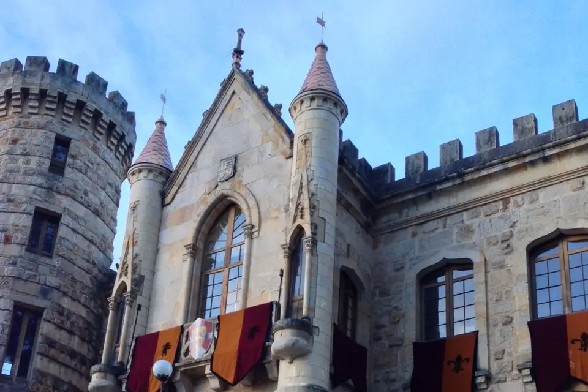
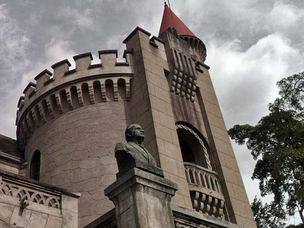
La ilustre fortaleza ha pasado por varias manos -algunas oscuras-, como cuando fue cabaré y después propiedad de un presunto jefe de la mafia; fue asilo de dementes y residencia también de Agustín Nieto Caballero y de los presidentes de la República José Manuel Marroquín Ricaurte y José Vicente Concha Ferreira, aunque actualmente paso a ser propiedad del estado y se desarrolla como centro de eventos en chia cundinamarca .
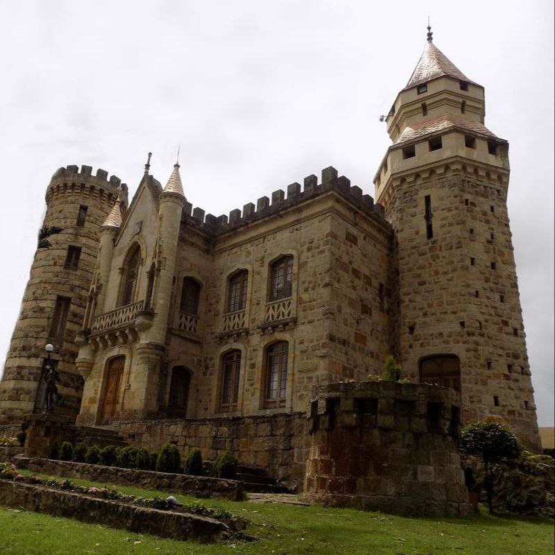
Fiesta COVID en Castillo Marroquín
Una multitudinaria fiesta celebrada en el Castillo
Marroquín, al norte de Bogotá, desató un duro escándalo
no solamente por su realización en el peor pico de la pandemia
del COVID-19, sino además por la ausencia de permisos
"¿Cómo se puede alquilar o entregar un local para un evento
si no se tiene un permiso? ¿Cómo se puede promocionar un
evento durante meses anteriores sin un permiso?
¿Cómo abren las puertas?", sostuvo la personera
de Chía."¿Un evento de esta magnitud cómo se pudo
lleva a cabo sin un conocimiento ni un control? Las
UCI en el municipio de Chía están desbordadas al 100%.
No concibo cómo se llevó a cabo ese evento este día",
agregó la representante del Ministerio Público.
¿Y... LOS ESPANTOS?
Dicen quienes han intentado habitarlo o trabajar
en el Castillo que entre las 7:30 y las 9 de la noche ni antes ni
después, un hombre de unos dos metros de altura, cubierto con
sobretodo y sombrero de copa negros, atraviesa el patio de la
fuente y se dirige al bosque, perdiéndose en él.
Los fantasmas que habitan el Castillo Marroquín son tan
conocidos y famosos, que hasta tienen su propia fisonomía y
hasta su propio apodo, como le pasa al fantasma de La Zancona.
Los que la han visto dicen que se trata de una mujer altísima,
vestida totalmente de negro, con la cabeza cubierta y una criatura
muerta entre sus brazos.
Llora sin cesar murmurando palabras que no existen por
la parte trasera del edificio y se sienta en una piedra.
Cualquiera diría que se parece bastante a la figura de La
Llorona, de no ser porque esta señora enlutada, cuando hace
el gesto de sentarse doblando las rodillas, éstas van elevándose
y las piernas le crecen tanto que al final no se la ve, quedando
oculta tras las enormes y larguiruchas piernas. Por eso la llaman
La Zancona.
ESTADO SE QUEDA CON CASTILLO QUE FUE RESIDENCIA PRESIDENCIAL, CABARET Y PROPIEDAD DE NARCO
la propiedad quedó en manos de Zapata Vásquez, considerado por las autoridades como jefe del cartel de Bogotá y que fue abatido por el Bloque de Búsqueda en Copacabana (Antioquia) en 1993. Hoy el castillo luce distinto a como era hace un siglo. Además de las caballerizas, también se encuentra una lujosa discoteca y una residencia de dos plantas,herencia de sus últimos propietarios. El propietario del bien, dice el expediente, se cambió de nombre en 1993, de Juan Camilo a Camilo Arturo, y murió en un operativo del bloque de búsqueda de la Policía, en Copacabana, Antioquia. Las autoridades de la época señalaban a Zapata de ser jefe del cartel de Bogotá, dedicado al narcotráfico en sociedad con el cartel de Medellín, cuyo jefe era Pablo Escobar.
Sin embargo, la juez de extinción de dominio consideró que no había evidencias de que Zapata fuera narcotraficante o de que sus bienes hubieran sido adquiridos con recursos ilegales, con base en las mismas investigaciones de las autoridades competentes que fueron conocidas en el proceso.
Ubicacion
Se encuenta ubicado en las cercanias de chia, cundinamarca ubicada aproximadamente a 30kilometros de bogota.
El castillo esta situado en una zona pintoresca rodeado de una zona verde muy hermosa y tanquila con un jardin precioso.
Ademas de sumarte a las grandes fiestas y conciertos que se celebran a lo grande en el castillo disfruta de las buenas vibras y de la increible musica.
 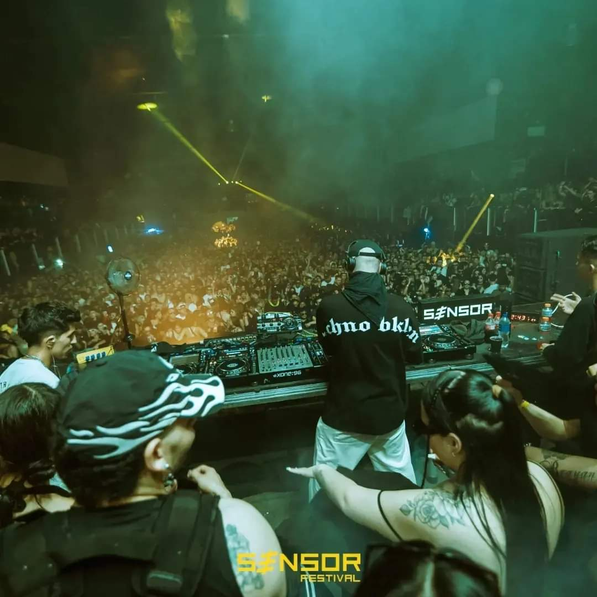
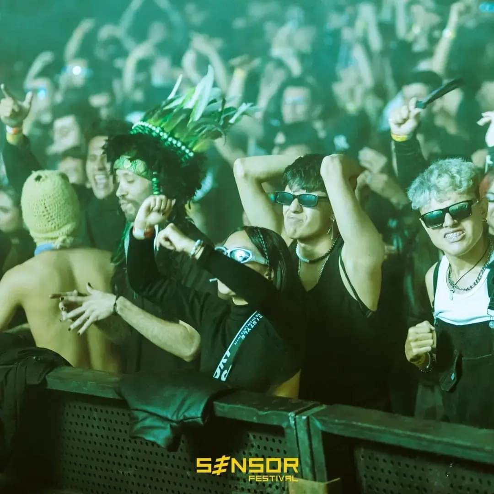
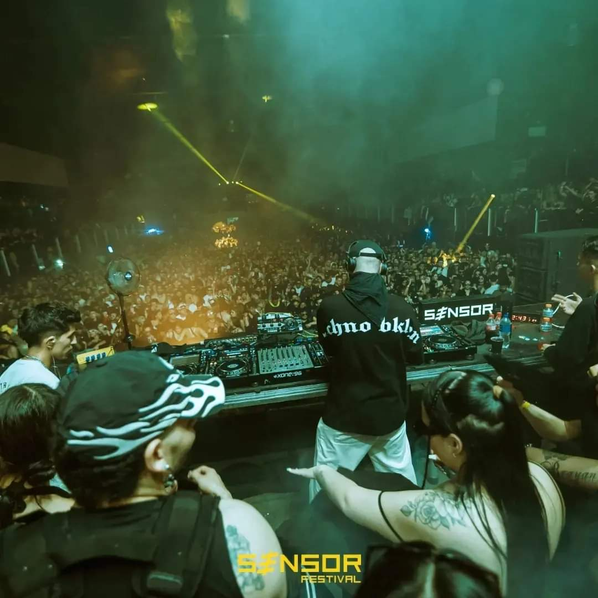
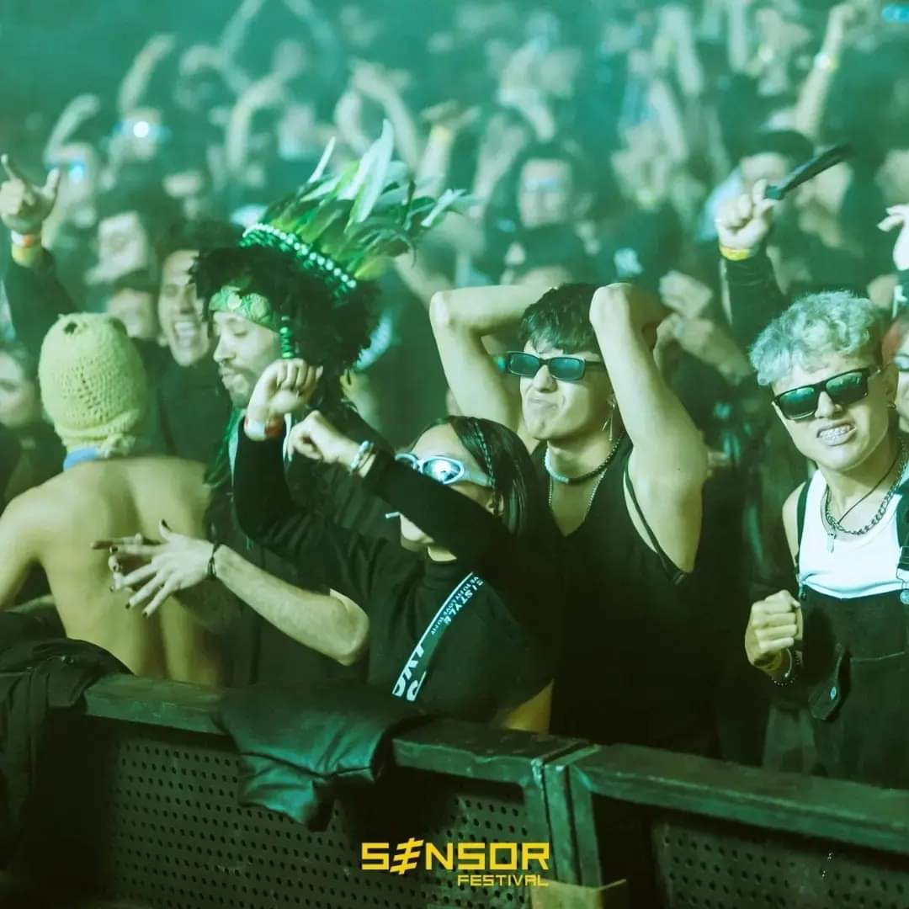


 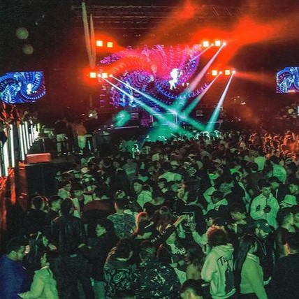
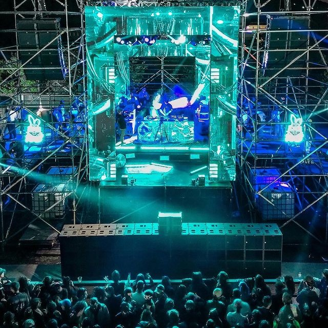
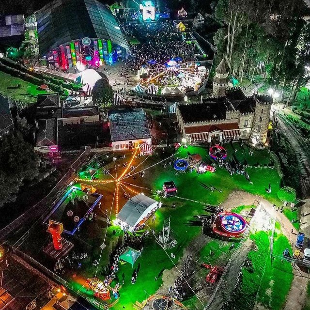
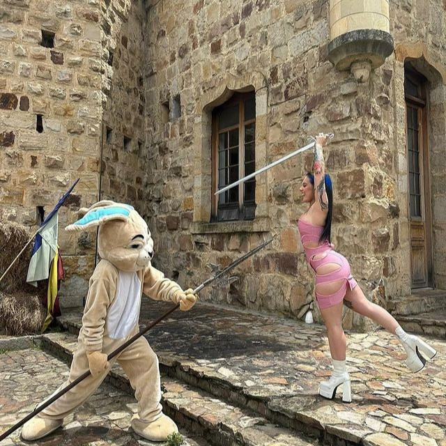
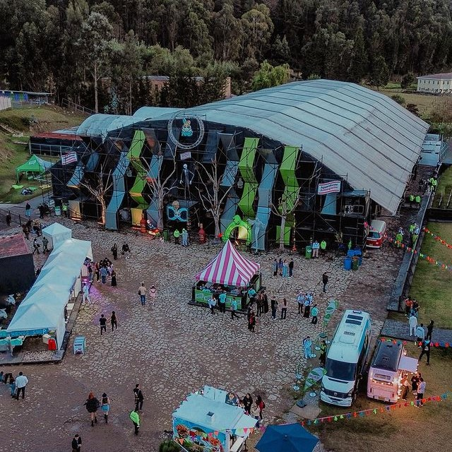
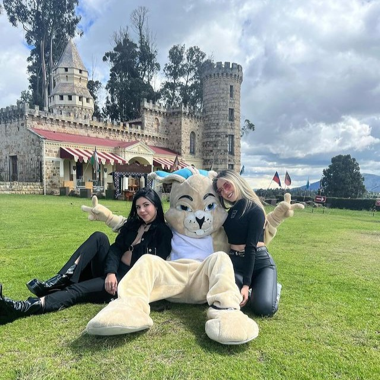
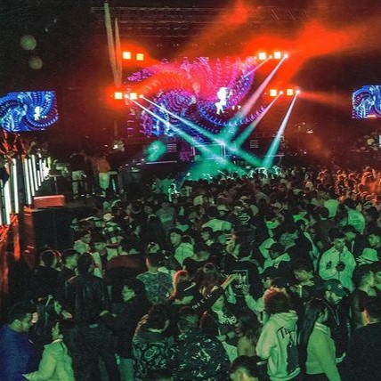
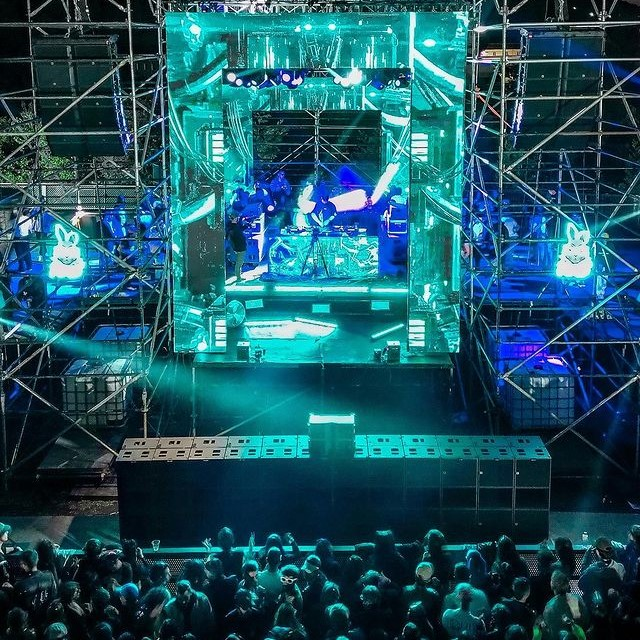
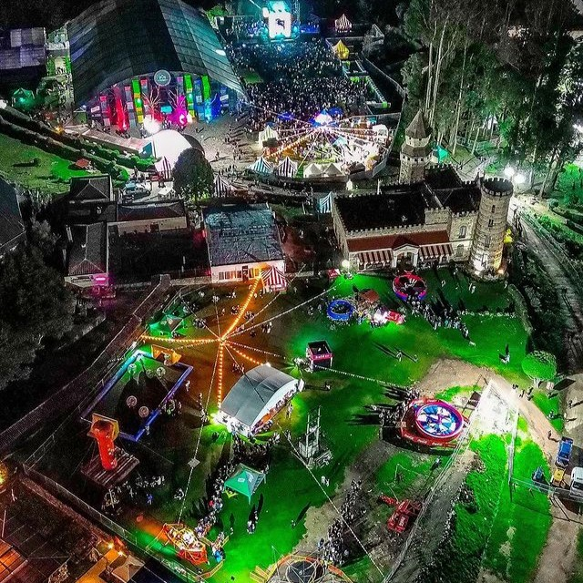
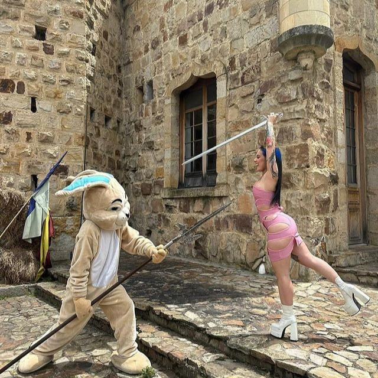
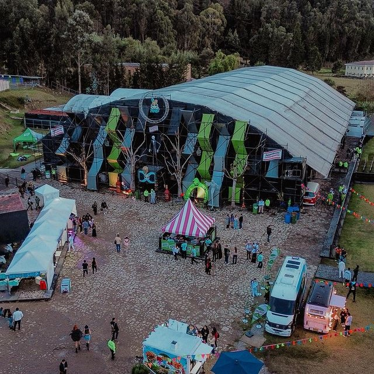
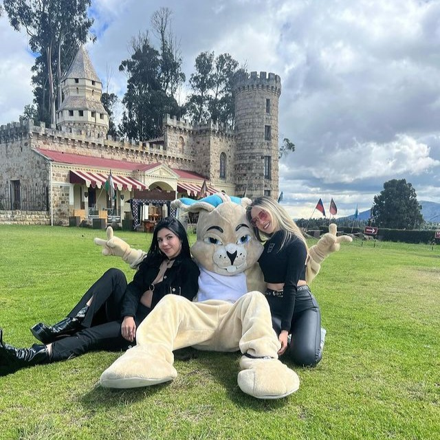